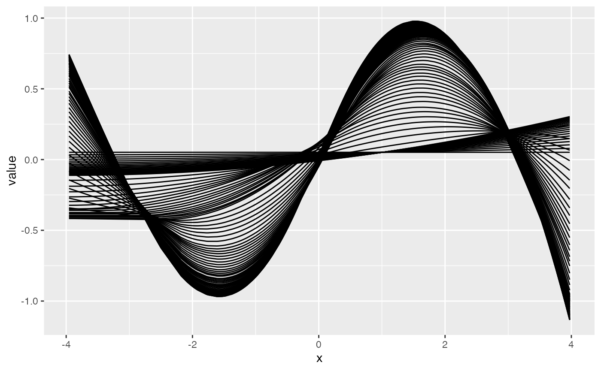
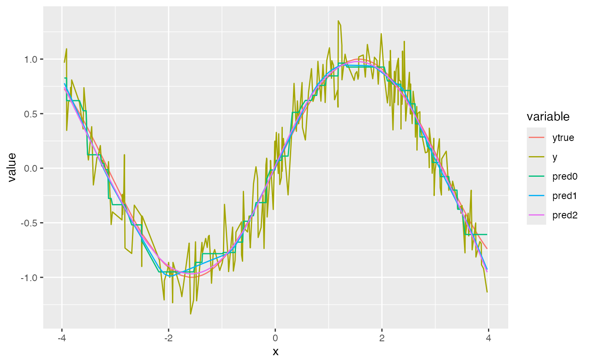

Fitting the Highly Adaptive Lasso with hal9001
Nima Hejazi and Jeremy Coyle
2021-04-19
Source:vignettes/intro_hal9001.Rmd
intro_hal9001.RmdIntroduction
The highly adaptive Lasso (HAL) is a flexible machine learning algorithm that nonparametrically estimates a function based on available data by embedding a set of input observations and covariates in an extremely high-dimensional space (i.e., generating basis functions from the available data). For an input data matrix of \(n\) observations and \(d\) covariates, the maximum number of zero-order basis functions generated is approximately \(n \cdot 2^{d - 1}\). To select a set of basis functions from among the (possibly reduced/screener) set that’s generated, the Lasso is employed. The hal9001 R package provides an efficient implementation of this routine, relying on the glmnet R package for compatibility with the canonical Lasso implementation, while still providing a (faster) custom C++ routine for using the Lasso with an input matrix composed of basis functions. Consult Benkeser and van der Laan (2016), (???), van der Laan (2017) for detailed theoretical descriptions of HAL and its various optimality properties.
Preliminaries
library(data.table)
library(ggplot2)
# simulation constants
set.seed(467392)
n_obs <- 500
n_covars <- 3
# make some training data
x <- replicate(n_covars, rnorm(n_obs))
y <- sin(x[, 1]) + sin(x[, 2]) + rnorm(n_obs, mean = 0, sd = 0.2)
# make some testing data
test_x <- replicate(n_covars, rnorm(n_obs))
test_y <- sin(x[, 1]) + sin(x[, 2]) + rnorm(n_obs, mean = 0, sd = 0.2)Let’s look at simulated data:
head(x)## [,1] [,2] [,3]
## [1,] 2.44102981 -0.4337909 0.4670282
## [2,] -1.21932335 0.3336395 0.8894277
## [3,] -0.40613567 -0.3869374 0.3474353
## [4,] -1.09760477 -1.4663219 -0.1173214
## [5,] 0.23710498 1.2565812 1.8049389
## [6,] 0.06810091 -0.7020905 0.9301941
head(y)## [1] 0.2372289 -0.6023415 -0.7569124 -1.8021339 1.0589707 -0.3373555Using the Highly Adaptive Lasso
## Loading required package: Rcpp## hal9001 v0.4.0: The Scalable Highly Adaptive Lasso
## note: fit_hal defaults have changed. See ?fit_hal for detailsFitting the model
HAL uses the popular glmnet R package for the lasso step:
hal_fit <- fit_hal(X = x, Y = y)
hal_fit$times## user.self sys.self elapsed user.child sys.child
## enumerate_basis 0.016 0.001 0.017 0 0
## design_matrix 0.051 0.004 0.055 0 0
## reduce_basis 0.000 0.000 0.000 0 0
## remove_duplicates 0.000 0.000 0.000 0 0
## lasso 1.034 0.056 1.135 0 0
## total 1.101 0.061 1.207 0 0Summarizing the model
While the raw output object may be examined, it has (usually large) slots that make quick examination challenging. The summary method provides an interpretable table of basis functions with non-zero coefficients. All terms (i.e., including the terms with zero coefficient) can be included by setting only_nonzero_coefs to FALSE when calling summary on a hal9001 model object.
##
##
## Summary of non-zero coefficients is based on lambda of 0.1099169
##
## coef
## -1.7687874362
## 0.1726315141
## -0.0245964275
## 0.0200119716
## 0.0083551475
## 0.0021217969
## -0.0005975216
## term
## (Intercept)
## [ I(x1 >= -3.224)*(x1 - -3.224)^1 ] * [ I(x2 >= -3.038)*(x2 - -3.038)^1 ]
## [ I(x1 >= -3.224)*(x1 - -3.224)^1 ] * [ I(x2 >= 0.499)*(x2 - 0.499)^1 ] * [ I(x3 >= -3.289)*(x3 - -3.289)^1 ]
## [ I(x2 >= -0.645)*(x2 - -0.645)^1 ] * [ I(x3 >= -3.289)*(x3 - -3.289)^1 ]
## [ I(x1 >= -0.74)*(x1 - -0.74)^1 ] * [ I(x2 >= -3.038)*(x2 - -3.038)^1 ] * [ I(x3 >= -1.89)*(x3 - -1.89)^1 ]
## [ I(x1 >= -3.224)*(x1 - -3.224)^1 ] * [ I(x2 >= -0.593)*(x2 - -0.593)^1 ] * [ I(x3 >= -1.528)*(x3 - -1.528)^1 ]
## [ I(x1 >= 0.305)*(x1 - 0.305)^1 ] * [ I(x2 >= -1.408)*(x2 - -1.408)^1 ] * [ I(x3 >= -3.289)*(x3 - -3.289)^1 ]Note the length and width of these tables! The R environment might not be the optimal location to view the summary. Tip: Tables can be exported from R to LaTeX with the xtable R package. Here’s an example: print(xtable(summary(fit)$table, type = "latex"), file = "~/haltbl_meow.tex").
Obtaining model predictions
# training sample prediction for HAL vs HAL9000
mse <- function(preds, y) {
mean((preds - y)^2)
}
preds_hal <- predict(object = hal_fit, new_data = x)
mse_hal <- mse(preds = preds_hal, y = y)
mse_hal## [1] 0.1940649
oob_hal <- predict(object = hal_fit, new_data = test_x)
oob_hal_mse <- mse(preds = oob_hal, y = test_y)
oob_hal_mse## [1] 1.540186Reducing basis functions
As described in Benkeser and van der Laan (2016), the HAL algorithm operates by first constructing a set of basis functions and subsequently fitting a Lasso model with this set of basis functions as the design matrix. Several approaches are considered for reducing this set of basis functions: 1. Removing duplicated basis functions (done by default in the fit_hal function), 2. Removing basis functions that correspond to only a small set of observations; a good rule of thumb is to scale with \(\frac{1}{\sqrt{n}}\), and that is the default.
The second of these two options may be modified by specifying the reduce_basis argument to the fit_hal function:
hal_fit_reduced <- fit_hal(X = x, Y = y, reduce_basis = 0.1)
hal_fit_reduced$times## user.self sys.self elapsed user.child sys.child
## enumerate_basis 0.013 0.000 0.014 0 0
## design_matrix 0.053 0.004 0.056 0 0
## reduce_basis 0.000 0.000 0.000 0 0
## remove_duplicates 0.000 0.000 0.000 0 0
## lasso 0.927 0.066 1.002 0 0
## total 0.993 0.070 1.072 0 0In the above, all basis functions with fewer than 10% of observations meeting the criterion imposed are automatically removed prior to the Lasso step of fitting the HAL regression. The results appear below
summary(hal_fit_reduced)$table## coef
## 1: -1.7687874362
## 2: 0.1726315141
## 3: -0.0245964275
## 4: 0.0200119716
## 5: 0.0083551475
## 6: 0.0021217969
## 7: -0.0005975216
## term
## 1: (Intercept)
## 2: [ I(x1 >= -3.224)*(x1 - -3.224)^1 ] * [ I(x2 >= -3.038)*(x2 - -3.038)^1 ]
## 3: [ I(x1 >= -3.224)*(x1 - -3.224)^1 ] * [ I(x2 >= 0.499)*(x2 - 0.499)^1 ] * [ I(x3 >= -3.289)*(x3 - -3.289)^1 ]
## 4: [ I(x2 >= -0.645)*(x2 - -0.645)^1 ] * [ I(x3 >= -3.289)*(x3 - -3.289)^1 ]
## 5: [ I(x1 >= -0.74)*(x1 - -0.74)^1 ] * [ I(x2 >= -3.038)*(x2 - -3.038)^1 ] * [ I(x3 >= -1.89)*(x3 - -1.89)^1 ]
## 6: [ I(x1 >= -3.224)*(x1 - -3.224)^1 ] * [ I(x2 >= -0.593)*(x2 - -0.593)^1 ] * [ I(x3 >= -1.528)*(x3 - -1.528)^1 ]
## 7: [ I(x1 >= 0.305)*(x1 - 0.305)^1 ] * [ I(x2 >= -1.408)*(x2 - -1.408)^1 ] * [ I(x3 >= -3.289)*(x3 - -3.289)^1 ]Other approaches exist for reducing the set of basis functions before they are actually created, which is essential for most real-world applications with HAL. Currently, we provide this “pre-screening” via num_knots argument in hal_fit. The num_knots argument is akin to binning: it increases the coarseness of the approximation. num_knots allows one to specify the number of knot points used to generate the basis functions for each/all interaction degree(s). This reduces the total number of basis functions generated, and thus the size of the optimization problem, and it can dramatically decrease runtime. One can pass in a vector of length max_degree to num_knots, specifying the number of knot points to use by interaction degree for each basis function. Thus, one can specify if interactions of higher degrees (e.g., two- or three- way interactions) should be more coarse. Increasing the coarseness of more complex basis functions helps prevent a combinatorial explosion of basis functions, which can easily occur when basis functions are generated for all possible knot points. We will show an example with num_knots in the section that follows.
Specifying smoothness of the HAL model
One might wish to enforce smoothness on the functional form of the HAL fit. This can be done using the smoothness_orders argument. Setting smoothness_orders = 0 gives a piece-wise constant fit (via zero-order basis functions), allowing for discontinuous jumps in the function. This is useful if one does not want to assume any smoothness or continuity of the “true” function. Setting smoothness_orders = 1 gives a piece-wise linear fit (via first-order basis functions), which is continuous and mostly differentiable. In general, smoothness_orders = k corresponds to a piece-wise polynomial fit of degree \(k\). Mathematically, smoothness_orders = k corresponds with finding the best fit under the constraint that the total variation of the function’s \(k^{\text{th}}\) derivative is bounded by some constant, which is selected with cross-validation.
Let’s see this in action.
set.seed(98109)
num_knots <- 500 # Try changing this value to see what happens.
n_covars <- 1
n_obs <- 500
x <- replicate(n_covars, runif(n_obs, min = -4, max = 4))
y <- sin(x[, 1]) + rnorm(n_obs, mean = 0, sd = 0.2)
ytrue <- sin(x[, 1])
hal_fit_0 <- fit_hal(
X = x, Y = y, smoothness_orders = 0, num_knots = num_knots
)
hal_fit_smooth_1 <- fit_hal(
X = x, Y = y, smoothness_orders = 1, num_knots = num_knots
)
hal_fit_smooth_2_all <- fit_hal(
X = x, Y = y, smoothness_orders = 2, num_knots = num_knots,
fit_control = list(cv_select = FALSE)
)
hal_fit_smooth_2 <- fit_hal(
X = x, Y = y, smoothness_orders = 2, num_knots = num_knots
)
pred_0 <- predict(hal_fit_0, new_data = x)
pred_smooth_1 <- predict(hal_fit_smooth_1, new_data = x)
pred_smooth_2 <- predict(hal_fit_smooth_2, new_data = x)
pred_smooth_2_all <- predict(hal_fit_smooth_2_all, new_data = x)
dt <- data.table(x = as.vector(x))
dt <- cbind(dt, pred_smooth_2_all)
long <- melt(dt, id = "x")
ggplot(long, aes(x = x, y = value, group = variable)) + geom_line()
Comparing the mean squared error (MSE) between the predictions and the true (denoised) outcome, the first- and second- order smoothed HAL is able to recover from the coarseness of the basis functions caused by the small num_knots argument. Also, the HAL with second-order smoothness is able to fit the true function very well (as expected, since sin(x) is a very smooth function). The main benefit of imposing higher-order smoothness is that fewer knot points are required for a near-optimal fit. Therefore, one can safely pass a smaller value to num_knots for a big decrease in runtime without sacrificing performance.
mean((pred_0 - ytrue)^2)## [1] 0.003732214
mean((pred_smooth_1- ytrue)^2)## [1] 0.002578282
mean((pred_smooth_2 - ytrue)^2)## [1] 0.02500429
dt <- data.table(x = as.vector(x),
ytrue = ytrue,
y = y,
pred0 = pred_0,
pred1 = pred_smooth_1,
pred2 = pred_smooth_2)
long <- melt(dt, id = "x")
ggplot(long, aes(x = x, y = value, color = variable)) + geom_line()
plot(x, pred_0, main = "Zero order smoothness fit")
plot(x, pred_smooth_1, main = "First order smoothness fit")
plot(x, pred_smooth_2, main = "Second order smoothness fit")In general, if the basis functions are not coarse, then the performance for different smoothness orders is similar. Notice how the runtime is a fair bit slower when more knot points are considered. In general, we recommend either zero- or first- order smoothness. Second-order smoothness tends to be less robust and suffers from extrapolation on new data. One can also use cross-validation to data-adaptively choose the optimal smoothness (invoked in fit_hal by setting adaptive_smoothing = TRUE). Comparing the following simulation and the previous one, the HAL with second-order smoothness performed better when there were fewer knot points.
set.seed(98109)
n_covars <- 1
n_obs <- 500
x <- replicate(n_covars, runif(n_obs, min = -4, max = 4))
y <- sin(x[, 1]) + rnorm(n_obs, mean = 0, sd = 0.2)
ytrue <- sin(x[, 1])
hal_fit_0 <- fit_hal(
X = x, Y = y, smoothness_orders = 0, num_knots = 300
)
hal_fit_smooth_1 <- fit_hal(
X = x, Y = y, smoothness_orders = 1, num_knots = 300
)
hal_fit_smooth_2 <- fit_hal(
X = x, Y = y, smoothness_orders = 2, num_knots = 300
)
pred_0 <- predict(hal_fit_0, new_data = x)
pred_smooth_1 <- predict(hal_fit_smooth_1, new_data = x)
pred_smooth_2 <- predict(hal_fit_smooth_2, new_data = x)
mean((pred_0 - ytrue)^2)## [1] 0.003650018
mean((pred_smooth_1- ytrue)^2)## [1] 0.0006597093
mean((pred_smooth_2 - ytrue)^2)## [1] 0.0009028049
plot(x, pred_0, main = "Zero order smoothness fit")
plot(x, pred_smooth_1, main = "First order smoothness fit")
plot(x, pred_smooth_2, main = "Second order smoothness fit")Formula interface
One might wish to specify the functional form of the HAL fit further. This can be done using the formula interface. Specifically, the formula interface allows one to specify monotonicity constraints on components of the HAL fit. It also allows one to specify exactly which basis functions (e.g., interactions) one wishes to model. The formula_hal function generates a formula object from a user-supplied character string, and this formula object contains the necessary specification information for fit_hal and glmnet. The formula_hal function is intended for use within fit_hal, and the user-supplied character string is inputted into fit_hal. Here, we call formula_hal directly for illustrative purposes.
set.seed(98109)
num_knots <- 100
n_obs <- 500
x1 <- runif(n_obs, min = -4, max = 4)
x2 <- runif(n_obs, min = -4, max = 4)
A <- runif(n_obs, min = -4, max = 4)
X <- data.frame(x1 = x1, x2 = x2, A = A)
Y <- rowMeans(sin(X)) + rnorm(n_obs, mean = 0, sd = 0.2) We can specify an additive model in a number of ways. We can print the formula object obtained by calling print. This will provide some helpful information about our HAL specification.
The formula below includes the outcome, but formula_hal doesn’t fit a HAL model, and doesn’t need the outcome (actually everything before “\(\tilde\)” is ignored in formula_hal). This is why formula_hal takes the input X matrix of covariates, and not X and Y. In what follows, we include formulas with and without “y” in the character string.
formula <- formula_hal(
"y ~ h(x1) + h(x2) + h(A)", X = X, smoothness_orders = 1, num_knots = 100
)
print(formula, expand = TRUE)## Functional specification for hal9001 fit:
## Call: y ~ h(x1) + h(x2) + h(A)
## Formula: y ~ h(x1) + h(x2) + h(A)
## Expanded Formula: y~ h(x1) + h(x2) + h(A)
## Number of smooth variables: 3
## Smoothness range: 1 -> 1
## Number of basis functions: 300
## Number of monotone-increasing basis functions: 0
## Number of monotone-decreasing basis functions: 0
## Functional specification for hal9001 fit:
## Call: y ~ h(x1) + h(x2) + h(A)
## Formula: y ~ h(x1) + h(x2) + h(A)
## Expanded Formula: y~ h(x1) + h(x2) + h(A)
## Number of smooth variables: 3
## Smoothness range: 1 -> 1
## Number of basis functions: 300
## Number of monotone-increasing basis functions: 0
## Number of monotone-decreasing basis functions: 0
formula <- formula_hal(
"~ .", X, smoothness_orders = 1, num_knots = 100
)
print(formula, expand = TRUE)## Functional specification for hal9001 fit:
## Call: ~ .
## Formula: ~ .
## Expanded Formula: ~ h(x1) + h(x2) + h(A)
## Number of smooth variables: 3
## Smoothness range: 1 -> 1
## Number of basis functions: 300
## Number of monotone-increasing basis functions: 0
## Number of monotone-decreasing basis functions: 0
# examine same formula expansion with "y"
formula <- formula_hal(
"y ~ .", X, smoothness_orders = 1, num_knots = 100
)
print(formula, expand = TRUE)## Functional specification for hal9001 fit:
## Call: y ~ .
## Formula: y ~ .
## Expanded Formula: y~ h(x1) + h(x2) + h(A)
## Number of smooth variables: 3
## Smoothness range: 1 -> 1
## Number of basis functions: 300
## Number of monotone-increasing basis functions: 0
## Number of monotone-decreasing basis functions: 0
## Functional specification for hal9001 fit:
## Call: y ~ .
## Formula: y ~ .
## Expanded Formula: y~ h(x1) + h(x2) + h(A)
## Number of smooth variables: 3
## Smoothness range: 1 -> 1
## Number of basis functions: 300
## Number of monotone-increasing basis functions: 0
## Number of monotone-decreasing basis functions: 0We can specify interactions as follows.
formula <- formula_hal(
"~ h(x1) + h(x2) + h(A) + h(x1, x2) + h(x2, A) + h(x1, A) + h(x1, x2, A)",
X = X, smoothness_orders = 1, num_knots = 100
)
print(formula$formula_expanded)## [1] "~ h(x1) + h(x2) + h(A) + h(x1,x2) + h(x2,A) + h(x1,A) + h(x1,x2,A)"
formula <- formula_hal(
"~ .^2", X = X, smoothness_orders = 1, num_knots = 100
)
print(formula$formula_expanded)## [1] "~ h(x1) + h(x2) + h(A) + h(x1,x2) + h(x1,A) + h(x2,A)"
formula <- formula_hal(
"~ .^3", X = X, smoothness_orders = 1, num_knots = 100
)
print(formula$formula_expanded)## [1] "~ h(x1) + h(x2) + h(A) + h(x1,x2) + h(x1,A) + h(x2,A) + h(x1,x2,A)"Sometimes, one might want to build an additive model, but include all two-way interactions with one variable (e.g., treatment “A”). This can be done in a variety of ways.
# Write it all out
formula <- formula_hal(
"y ~ h(x1) + h(x2) + h(A) + h(A, x1) + h(A,x2)", X,
smoothness_orders = 1, num_knots = 100
)
print(formula$formula_expanded)## [1] "y~ h(x1) + h(x2) + h(A) + h(x1,A) + h(x2,A)"
## [2] "y~ h(x1) + h(x2) + h(A) + h(x1,A) + h(x2,A)"
# Use the "." which stands for add all additive terms and then manually add
# interactions
formula <- formula_hal(
"y ~ . + h(A,x1) + h(A,x2)", X, smoothness_orders = 1, num_knots = 100
)
print(formula$formula_expanded)## [1] "y~ h(x1) + h(x2) + h(A) + h(x1,A) + h(x2,A)"
## [2] "y~ h(x1) + h(x2) + h(A) + h(x1,A) + h(x2,A)"
# Use the "wildcard" feature for when "." is included in the "h()" term. This
# useful when you have many variables and do not want to write out every term.
formula <- formula_hal(
"~ . + h(A,.)", X, smoothness_orders = 1, num_knots = 100
)
print(formula$formula_expanded)## [1] "~ h(x1) + h(x2) + h(A) + h(x1,A) + h(x2,A)"Here are some other shortcuts inspired by the glm formula interface.
# The "*" operation generates lower order interactions as well.
formula <- formula_hal(
"~ h(x1)*h(x2)", X, smoothness_orders = 1, num_knots = 100
)
print(formula$formula_expanded)## [1] "~ h(x1) + h(x2) + h(x1,x2)"
formula <- formula_hal(
"~ h(x1) + h(x2) + h(x1,x2)", X, smoothness_orders = 1, num_knots = 100
)
print(formula$formula_expanded)## [1] "~ h(x1) + h(x2) + h(x1,x2)"
# The ":" operator generates an interaction term.
formula <- formula_hal(
"~ h(x1) + h(x2) + h(x1):h(x2)", X, smoothness_orders = 1, num_knots = 100
)
print(formula$formula_expanded)## [1] "~ h(x1) + h(x2) + h(x1,x2)"The custom_group argument, allows one to define custom wildcard symbols that specify groups, analagous to “.”. The custom_group argument should be a named list whose elements are character vectors of variable names in X, and one can define interactions between their groups. Custom group names must be single characters of length one.
custom_group <- list("a" = c("A"), "w" = c("x1", "x2"))
formula <- formula_hal(
"~ h(w)", X, smoothness_orders = 1, num_knots = 100,
custom_group = custom_group
)
print(formula$formula_expanded)## [1] "~ h(x1) + h(x2)"
formula <- formula_hal(
"~ h(a, w)", X, smoothness_orders = 1, num_knots = 100,
custom_group = custom_group
)
print(formula$formula_expanded)## [1] "~ h(x1,A) + h(x2,A)"
formula <- formula_hal(
"y ~ h(w) + h(w, a)", X, smoothness_orders = 1, num_knots = 100,
custom_group = custom_group
)
print(formula$formula_expanded)## [1] "y~ h(x1) + h(x2) + h(x1,A) + h(x2,A)"
## [2] "y~ h(x1) + h(x2) + h(x1,A) + h(x2,A)"
formula <- formula_hal(
"~ h(w, a, x1)", X, smoothness_orders = 1, num_knots = 100,
custom_group = custom_group
)
print(formula$formula_expanded)## [1] "~ h(x1,x2,A)"
formula <- formula_hal(
"y ~ h(w, a, w)", X, smoothness_orders = 1, num_knots = 100,
custom_group = custom_group
)
print(formula$formula_expanded)## [1] "y~ h(x1,x2,A)" "y~ h(x1,x2,A)"A key feature of the HAL formula is monotonicity constraints. Specifying these constraints is achieved by simply replacing the “h” with either “i”, for monotonically increasing; or “d”, for monotonically decreasing.
# An additive monotone increasing model
formula <- formula_hal(
"y ~ i(.)", X, smoothness_orders = 1, num_knots = 100
)
print(formula, expand = TRUE)## Functional specification for hal9001 fit:
## Call: y ~ i(.)
## Formula: y ~ i(.)
## Expanded Formula: y~ i(x1) + i(x2) + i(A)
## Number of smooth variables: 3
## Smoothness range: 1 -> 1
## Number of basis functions: 300
## Number of monotone-increasing basis functions: 300
## Number of monotone-decreasing basis functions: 0
## Functional specification for hal9001 fit:
## Call: y ~ i(.)
## Formula: y ~ i(.)
## Expanded Formula: y~ i(x1) + i(x2) + i(A)
## Number of smooth variables: 3
## Smoothness range: 1 -> 1
## Number of basis functions: 300
## Number of monotone-increasing basis functions: 300
## Number of monotone-decreasing basis functions: 0
print(" ")## [1] " "
# A bi-additive monotone decreasing model
formula <- formula_hal(
"~ d(.) + d(.,.)", X, smoothness_orders = 1, num_knots = 100
)
print(formula, expand = TRUE)## Functional specification for hal9001 fit:
## Call: ~ d(.) + d(.,.)
## Formula: ~ d(.) + d(.,.)
## Expanded Formula: ~ d(x1) + d(x2) + d(A) + d(x1,x2) + d(x1,A) + d(x2,A)
## Number of smooth variables: 3
## Smoothness range: 1 -> 1
## Number of basis functions: 1779
## Number of monotone-increasing basis functions: 0
## Number of monotone-decreasing basis functions: 1779
print(" ")## [1] " "
# mix it up
formula <- formula_hal(
"y ~ d(x1) + i(x2) + h(A) + h(.,.)", X, smoothness_orders = 1,
num_knots = 100
)
print(formula, expand = TRUE)## Functional specification for hal9001 fit:
## Call: y ~ d(x1) + i(x2) + h(A) + h(.,.)
## Formula: y ~ d(x1) + i(x2) + h(A) + h(.,.)
## Expanded Formula: y~ d(x1) + i(x2) + h(A) + h(x1,x2) + h(x1,A) + h(x2,A)
## Number of smooth variables: 3
## Smoothness range: 1 -> 1
## Number of basis functions: 1779
## Number of monotone-increasing basis functions: 100
## Number of monotone-decreasing basis functions: 100
## Functional specification for hal9001 fit:
## Call: y ~ d(x1) + i(x2) + h(A) + h(.,.)
## Formula: y ~ d(x1) + i(x2) + h(A) + h(.,.)
## Expanded Formula: y~ d(x1) + i(x2) + h(A) + h(x1,x2) + h(x1,A) + h(x2,A)
## Number of smooth variables: 3
## Smoothness range: 1 -> 1
## Number of basis functions: 1779
## Number of monotone-increasing basis functions: 100
## Number of monotone-decreasing basis functions: 100Now, that we’ve illustrated the options with formula_hal, let’s show how to fit a HAL model with the specified formula.
# get formula object
fit <- fit_hal(
X = X, Y = Y, formula = "~ .", smoothness_orders = 1, num_knots = 100
)
print(summary(fit), 10) # prints top 10 rows, i.e., highest absolute coefs##
## Summary of top 10 non-zero coefficients is based on lambda of 0.0006475641
##
## coef term
## 0.7346974 (Intercept)
## -0.3594509 [ I(x1 >= 1.188)*(x1 - 1.188)^1 ]
## -0.2996942 [ I(A >= -3.978)*(A - -3.978)^1 ]
## -0.2920313 [ I(x2 >= -3.992)*(x2 - -3.992)^1 ]
## -0.2782884 [ I(x2 >= 1.679)*(x2 - 1.679)^1 ]
## -0.2610702 [ I(A >= 1.395)*(A - 1.395)^1 ]
## -0.2445026 [ I(x1 >= -3.972)*(x1 - -3.972)^1 ]
## 0.1909862 [ I(A >= -1.391)*(A - -1.391)^1 ]
## 0.1768218 [ I(x2 >= -1.254)*(x2 - -1.254)^1 ]
## 0.1527683 [ I(x1 >= -1.478)*(x1 - -1.478)^1 ]
References
Benkeser, David, and Mark J van der Laan. 2016. “The Highly Adaptive Lasso Estimator.” In 2016 IEEE International Conference on Data Science and Advanced Analytics (DSAA). IEEE. https://doi.org/10.1109/dsaa.2016.93.
van der Laan, Mark J. 2017. “Finite Sample Inference for Targeted Learning.” https://arxiv.org/abs/1708.09502.